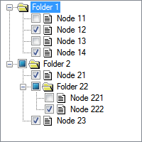

You can create checkboxes on tree widgets with the WIDGET_TREE function, using the CHECKBOX keyword. To control the state of the checkboxes, use the CHECKED keyword. The following image shows checked nodes in tree widget nodes. The filled-in squares next to folders indicate a mixed check state, where some child nodes of the folder are checked and some are not.

This example demonstrates a simple tree with checkboxes on some of its nodes. The tree root's event handler adds business logic to set the state of a node's descendants and ancestors. Checking a folder node sets all child nodes to "checked". Unchecking a node changes all ancestors to either "unchecked" or "mixed", depending on the state of other nodes.
; This routine sets all descendants of a node
; to the given check state.
PRO MY_TREE_UPDATE_DESCENDANTS, node, state
COMPILE_OPT IDL2
; Get an array of all child nodes.
children = WIDGET_INFO( node, /ALL_CHILDREN )
IF ( children[0] EQ 0 ) THEN RETURN
; Set the check-state of each child and then recursively
; update their children
FOREACH c, children DO BEGIN
WIDGET_CONTROL, c, SET_TREE_CHECKED = state
MY_TREE_UPDATE_DESCENDANTS, c, state
ENDFOREACH
END
; This routine sets the check state of all tree widget ancestors of a
; node. The main rule is that if all children are checked or
; all are unchecked then the parent gets the check-state of the
; children. If at least one, but not all, children are unchecked
; or mixed then the parent gets the state of mixed.
PRO MY_TREE_UPDATE_ANCESTORS, node
COMPILE_OPT IDL2
; Get the parent and proceed only if it is a tree widget
parent = WIDGET_INFO( node, /parent )
IF ( parent NE 0 AND WIDGET_INFO( parent, /type ) EQ 11 ) THEN BEGIN
; Get statistics on the children:
; - number of children that are checked (value of 1)
; - number of children that are mixed (value of 2)
; - total number of children of any state
children = WIDGET_INFO( parent, /all_children )
nOnes = TOTAL( WIDGET_INFO( children, /TREE_CHECKED ) eq 1 )
nTwos = TOTAL( WIDGET_INFO( children, /TREE_CHECKED ) eq 2 )
nChildren = N_ELEMENTS( children )
; Figure out the state of the parent node
IF ( nOnes EQ nChildren ) THEN BEGIN
newState = 1
ENDIF ELSE IF ( nOnes GE 1 || nTwos GE 1 ) THEN BEGIN
newState = 2
ENDIF ELSE BEGIN
newState = 0
ENDELSE
; Apply the new state and recursively repeat on the next ancestor
WIDGET_CONTROL, parent, SET_TREE_CHECKED = newState
MY_TREE_UPDATE_ANCESTORS, parent
ENDIF
END
; Create the event handlers
PRO TREE_CHECKBOX_EXAMPLE_EVENT, e
END
PRO HANDLE_TREE_EVENT, e
COMPILE_OPT IDL2
HELP, e, /STRUCTURE
IF ( e.type EQ 2 ) THEN BEGIN
MY_TREE_UPDATE_DESCENDANTS, e.id, e.state
MY_TREE_UPDATE_ANCESTORS, e.id
ENDIF
END
; This is the widget creation routine
PRO TREE_CHECKBOX_EXAMPLE
COMPILE_OPT IDL2
; Create a top level base
topLevelBase = WIDGET_BASE( $
XOFFSET = 200, YOFFSET = 100 )
; Create the tree
root = WIDGET_TREE( topLevelBase, $
event_pro = 'HANDLE_TREE_EVENT' )
; Create the first folder without a checkbox
f1 = WIDGET_TREE( ROOT, /FOLDER, /EXPANDED, VALUE = 'Folder 1' )
; Create the nodes with checkboxes.
; Check some of the boxes (CHECKED = 1)
n11 = WIDGET_TREE( f1, VALUE = 'Node 11', /CHECKBOX, CHECKED = 0 )
n12 = WIDGET_TREE( f1, VALUE = 'Node 12', /CHECKBOX, CHECKED = 1 )
n13 = WIDGET_TREE( f1, VALUE = 'Node 13', /CHECKBOX, CHECKED = 0 )
n14 = WIDGET_TREE( f1, VALUE = 'Node 14', /CHECKBOX, CHECKED = 1 )
; Create the second folder and child nodes with checkboxes.
; Checkboxes are not checked on creation.
f2 = WIDGET_TREE( ROOT, /FOLDER, /EXPANDED, /CHECKBOX, VALUE = 'Folder 2' )
n21 = WIDGET_TREE( f2, VALUE = 'Node 21' )
f22 = WIDGET_TREE( f2, /FOLDER, VALUE = 'Folder 22' )
n221 = WIDGET_TREE( f22, VALUE = 'Node 221' )
n222 = WIDGET_TREE( f22, VALUE = 'Node 222' )
n23 = WIDGET_TREE( f2, VALUE = 'Node 23' )
; Realize the widgets
WIDGET_CONTROL, topLevelBase, /REALIZE
XMANAGER, 'TREE_CHECKBOX_EXAMPLE', topLevelBase, /NO_BLOCK
END